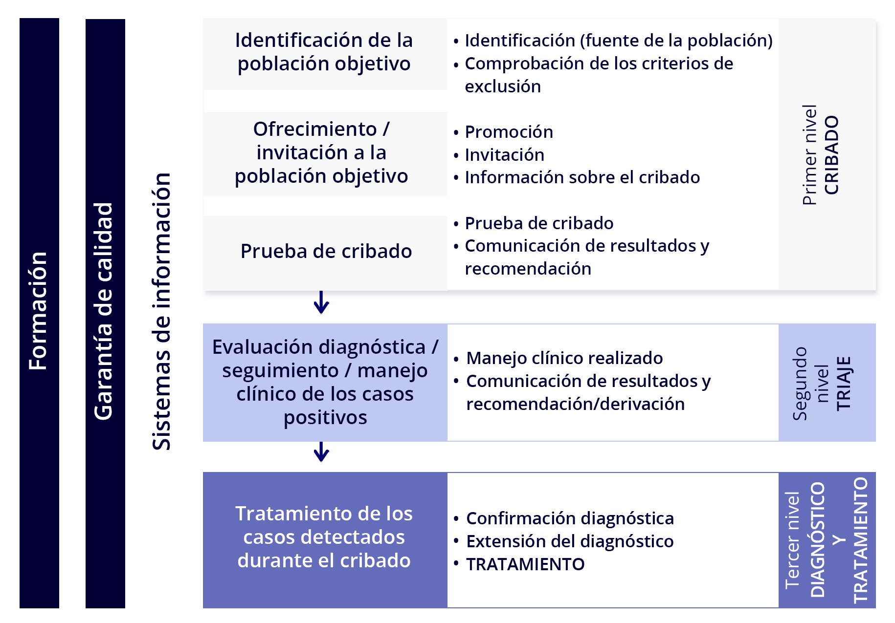

Determinantes para una implementación efectiva
El punto de partida y el requisito previo para implementar cualquier programa de cribado es un mandato gubernamental. Esta decisión de ejecutar un programa debe cumplir los requisitos relacionados con la enfermedad (importancia y existencia de una fase presintomática identificable), la disponibilidad de una prueba de cribado adecuada, la evidencia de la eficacia del cribado, la aceptabilidad del mismo y la disponibilidad de suficientes recursos técnicos, económicos y humanos que sean coste-efectivos en el contexto del cribado (para más información sobre los principios del cribado, véase el Módulo 1).
Una vez tomada la decisión, es importante reconocer que un programa de cribado es un servicio complejo. No solo es una prueba sino una secuencia de fases (cribado, seguimiento/preparación y tratamiento) y actividades (figura 1). En consecuencia, intervienen diferentes niveles de atención y diferentes grupos profesionales que deben coordinarse.
FIGURA 1 Fases de un programa de cribado
La circulación de los participantes (y de la información) entre las distintas fases, la coordinación de los distintos niveles de atención y de los diversos profesionales implicados, y la calidad de cada una de las actividades de cada fase, son factores determinantes de la eficacia del cribado.
El control de calidad en cada una de las actividades del programa es fundamental para maximizar los beneficios del cribado y minimizar los potenciales efectos adversos. La formación de los profesionales que participan en el programa y el establecimiento de un programa explícito de control de calidad son fundamentales para lograr un nivel de calidad adecuado. Esta garantía de calidad requiere la definición de protocolos para los diferentes procesos y el establecimiento de un sistema de seguimiento, así como la evaluación sistemática del programa.
Debido a la complejidad de cualquier programa de cribado, su puesta en marcha debe enfocarse a través de una metodología que garantice su éxito (véase el Módulo 9). A continuación, se presentan algunos elementos cruciales que deben abordarse durante la implementación, y que se detallan en unidades posteriores:
Desarrollo de un sistema de información que permita el reclutamiento de la población diana y el seguimiento de los casos positivos en el cribado.
Definición del método de comunicación de los resultados del cribado (qué, cómo...).
Diseño y desarrollo de sistemas de información para la gestión y evaluación del programa.
Establecimiento de un programa de garantía de calidad y control de calidad desde el inicio.
Definición de la evaluación del programa en cuanto a indicadores y estándares.
Establecimiento de requisitos de formación y programas de formación.